ra-yavuz › edgecall

edgecall
A small self-hosted, OpenAI-compatible API. You POST a sentence like "what is the gold price"; a deliberately weak local model (phi3-class, the kind that runs on a Raspberry Pi or a phone) reads a short menu of your registered functions, picks one, and edgecall runs it and returns the result.
The whole trick: the model never sees your full function list. Functions are shown a few at a time as a numbered menu, and the model pages through with a "next" option until it picks one. Picking one item off a short list is the easiest thing a weak model can do, so a weak model is enough. No embedding model, no index to maintain.
How it works
request: "i need to know the current gold price"
|
v
edgecall shows the weak model menu page 0:
0001 show the message of the day
0002 find the current gold price
0003 get the current weather for a location
NEXT none of these, see more options
|
model replies: 0002
v
edgecall runs function 0002 -> { "price": 4347.1, "currency": "USD", ... }
If the right function is not on the current page, the model replies
NEXT and edgecall shows the next page. Pages are just slices
of your function list in registration order. The trade-off: a function
deep in the list costs the model one NEXT per page to reach,
and weak models page blindly, so put your most-used functions first.
What it is for
You want useful pre-programmed actions triggered by natural language, but
you do not want to pay for a frontier model or send anything to the
cloud. edgecall lets a cheap local model do the routing while the actual
work stays in plain Python functions you control. It does not host a
model: it talks to any OpenAI-compatible /v1 endpoint you
already run (llama.cpp, ollama, LM Studio, or a sibling
hydra-llm server).
Add a function
Every *.py file in the functions directory is autoloaded at
startup. Give it an id and a one-line description:
from edgecall.registry import register
@register(id="0006", desc="say hello to a name")
def run(args):
name = args.get("name", "world")
return {"greeting": f"hello, {name}"}
args["request"] is always the original sentence; other keys
are whatever the caller passed. Return any JSON-serialisable value. The
bundled examples include a message-of-the-day function served from a text
file, plus live gold-price and weather lookups over public no-key APIs.
API
| Endpoint | What it does |
|---|---|
POST /v1/dispatch | edgecall-native. Body {"request": "...", "args": {...}, "trace": false}; returns the chosen function id, its result, and optionally the full decision trace. |
POST /v1/chat/completions | OpenAI-compatible shim. The last user message is the request; the function result comes back as the assistant message content. One request, one function. |
GET /v1/functions | list registered functions |
GET /healthz | liveness |
Install (Debian / Ubuntu)
From the signed apt repository
One line. Sets up the signed repo if not already added, refreshes the index, installs edgecall:
sudo bash -c 'set -e; install -m 0755 -d /etc/apt/keyrings && curl -fsSL https://ra-yavuz.github.io/apt/pubkey.gpg -o /etc/apt/keyrings/ra-yavuz.gpg && echo "deb [signed-by=/etc/apt/keyrings/ra-yavuz.gpg] https://ra-yavuz.github.io/apt stable main" > /etc/apt/sources.list.d/ra-yavuz.list && apt update && apt install -y edgecall'Or grab the .deb from Releases and sudo apt install ./edgecall_*.deb.
Then:
edgecall functions # list what is registered
edgecall serve # run the API on 127.0.0.1:8900
edgecall dispatch "what time is it" --trace # route one request, no serverRun with Docker Compose
git clone https://github.com/ra-yavuz/edgecall
cd edgecall
# Edit docker-compose.yml: set EDGECALL_MODEL_BASE_URL to your endpoint.
docker compose up -d
curl -s -X POST localhost:8900/v1/dispatch \
-H 'content-type: application/json' \
-d '{"request":"what is the gold price"}'The honest limitation
A weak model picking from a menu will sometimes pick wrong, and edgecall will faithfully run whatever it picked. That is the deal you accept for not paying for a frontier model. Mitigations baked in: a tight low-temperature reply, strict parsing (only an id actually on the page is accepted), bounded retries, and a full decision trace so you can see why a wrong call happened. For high-stakes actions, gate the function itself; do not rely on the model's pick alone.